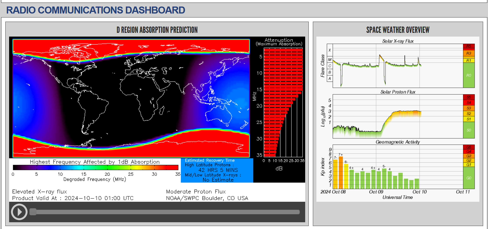

Click on "Dashboards" then radio for current readings and you'll see:

There is another dashboard for aurora, worth watching since the sun has been uh, spitting at us.
73,
Rick nk7i
Just FYI,https://www.swpc.noaa.gov/
73,Robert
_______________________________________________ Chat mailing list Chat@ncdxc.org http://mail.ncdxc.org/mailman/listinfo/chat_ncdxc.org